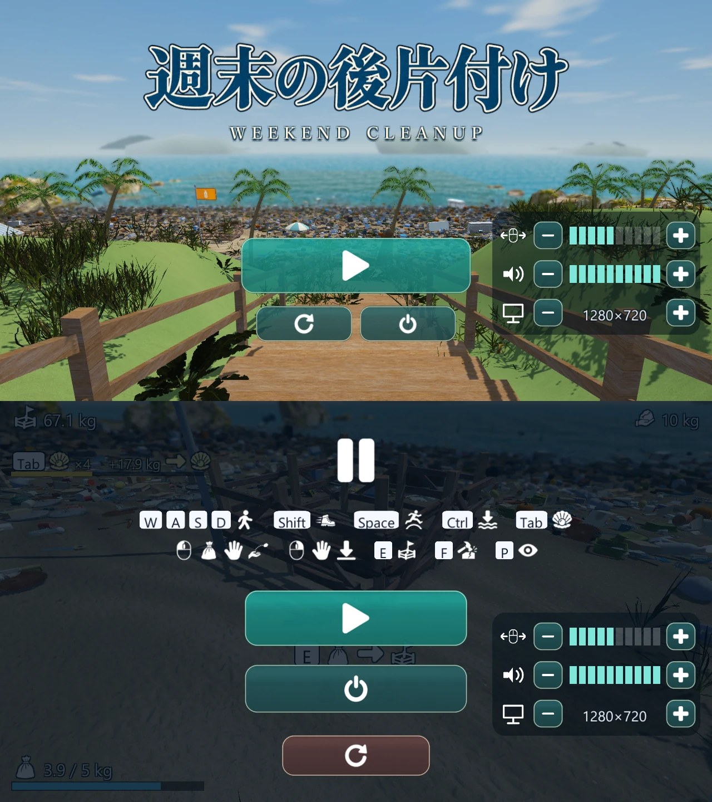

見つけて、拾う。
浜に散らばる小物を袋に集める。足元を探したり、海に潜ったり。見落としていた場所へ、もう一歩。
KAKAPOSOFT ORIGINAL GAME 開発中
その浜辺を、
もう一度きれいに。
WEEKEND CLEANUP
波の音を聞きながら、ひとつ拾う。
砂浜から海の中へ。あなたのペースで、後片付け。
散らかった浜辺を歩いて、
目の前のごみをひとつずつ。
小さなものは袋へ。重いものは手で持って、回収場所へ。片付けた場所の砂や海が少しずつきれいになる、そんな手応えを楽しむゲームをつくっています。
舞台は砂浜だけではありません。波打ち際、浅瀬、そして海の中にも、まだ片付けるものが待っています。
浜に散らばる小物を袋に集める。足元を探したり、海に潜ったり。見落としていた場所へ、もう一歩。
大きなものには、それだけの重さがある。小物を入れ物にまとめたり、手で持って投げ入れたり。物理のある空間で、運び方を工夫できます。
片付けを進めると、海から新しい力を授かります。重いものを運ぶか、まとめて拾うか。自分で道を選び、できることを広げていきます。
海からの授かり
スキルは、自動で決まるのではなく自分で選ぶもの。
4つの入り口から、遊び方に合った枝を伸ばしていきます。
もっと重いものを
運べるように。
近くのごみを
まとめて拾う。
一度に持ち帰れる
袋の量を増やす。
周囲のごみを
自動で袋の中へ。
その先には、解体・水中活動・移動・探索を助ける枝も。スキルの内容やバランスは調整中です。
実際の開発画面 / 2026年11月

掲載画像は開発途中の実画面です。現在の試作版や完成版とは、見た目・UI・内容が異なる場合があります。
まずは、ひとつの浜辺から。
片付けの手応えや風景、音、遊びの広がりを、
ここからさらに磨いていきます。
試作版を制作中
公開時期・配布方法・価格は未定です。
このページではゲーム本体の配布は行っていません。
キーボードとマウスで操作します。開発中のため、操作方法は変更される場合があります。
拾った先に、どんな浜辺が見えるだろう。
KakapoSoft ホームへ